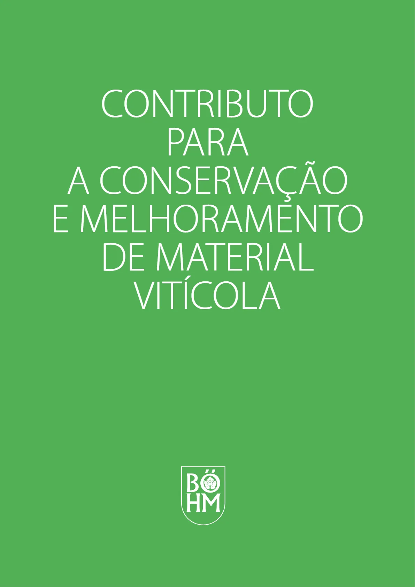

Família Böhm · Livros
Contributo para a conservação e melhoramento de material vitícola
45 anos de trabalho da Viveiros PLANSEL a favor do material vitícola de Portugal: certificação de castas e clones, resposta às alterações climáticas, castas novas resistentes (PIWI) e a documentação dos ensaios em campo. Com Hans Jörg (Jorge) Böhm, 2026.
O livro é apresentado aqui na versão original em português.